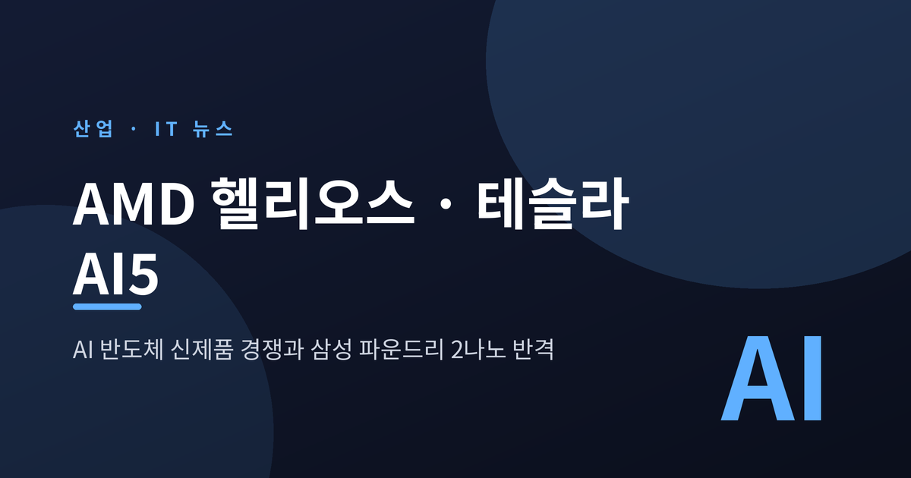
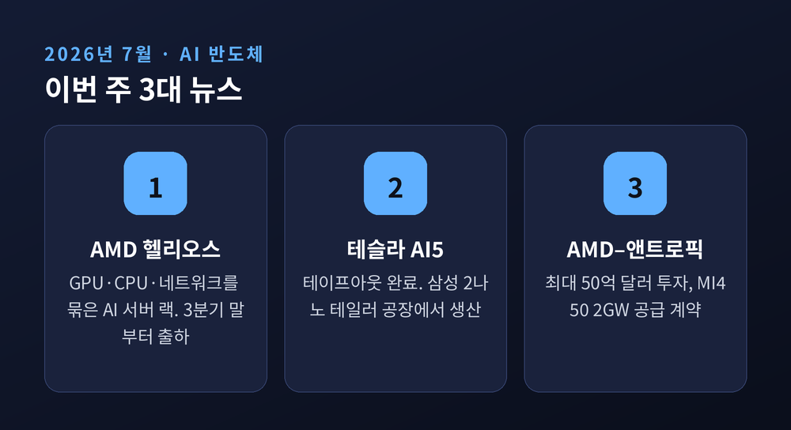
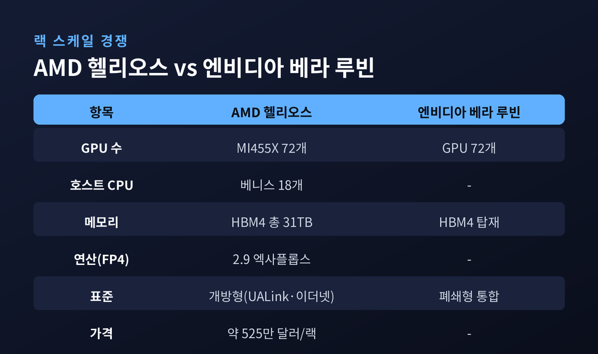
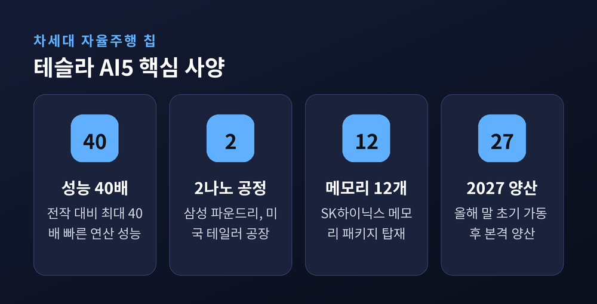
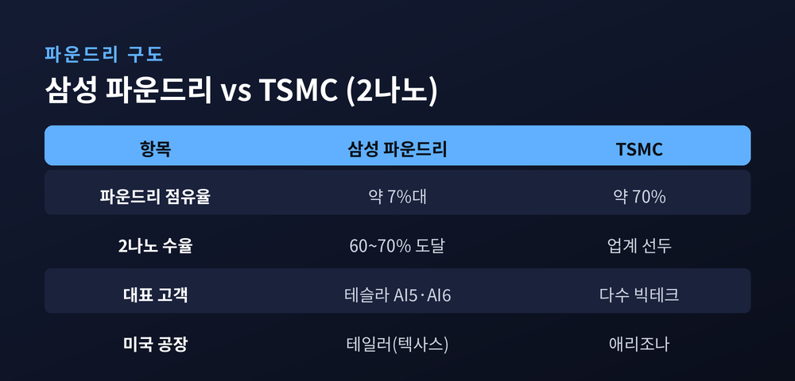
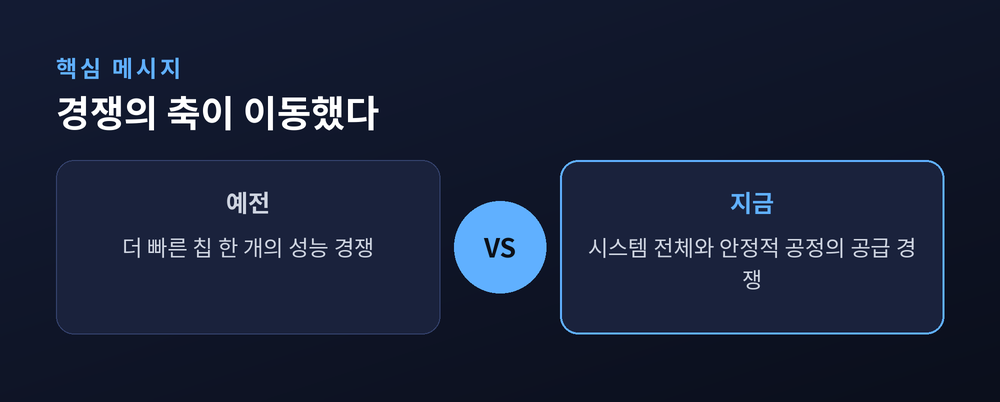

이번 글에서는 2026년 7월 한 주에 몰린 AI 반도체 소식을 한자리에 정리해 보겠습니다. AMD가 새 AI 서버 랙 '헬리오스'를 내놨고, 테슬라의 차세대 칩 'AI5'는 삼성 2나노 공정으로 향했습니다. 무슨 일이 있었는지, 왜 중요한지, 그리고 앞으로 무엇을 지켜봐야 하는지 차례로 짚어 드리겠습니다.
먼저 세 줄로 요약하면 이렇습니다. AMD는 GPU·CPU·네트워킹을 하나로 묶은 랙 '헬리오스'를 공개하고 3분기 말부터 출하합니다. 테슬라 AI5는 테이프아웃을 마치고 삼성 미국 테일러 공장의 2나노 라인에 올라탔습니다.

AMD는 7월 샌프란시스코에서 'Advancing AI 2026' 행사를 열었습니다. 이 자리에서 랙 스케일 플랫폼 '헬리오스(Helios)'를 전면에 내세웠습니다.
헬리오스는 부품 하나가 아니라, 액체냉각 랙 한 대를 통째로 파는 제품입니다. 랙 하나에 GPU 'MI455X' 72개와 6세대 EPYC CPU '베니스' 18개, 그리고 펜산도 네트워킹이 들어갑니다. 최상위 구성 기준으로 저정밀(FP4) 연산 2.9 엑사플롭스, HBM4 메모리 총 31TB를 담습니다. 가격은 랙 한 대에 약 525만 달러 수준으로 알려졌습니다.
핵심 부품의 성능도 함께 공개됐습니다. MI455X는 새 CDNA 5 구조를 쓰며 FP4 기준 최대 40 페타플롭스를 냅니다. GPU 한 개에 HBM4 메모리 432GB를 실었습니다. 큰 모델을 통째로 올려 두기 위한 설계입니다. CPU 베니스는 Zen 6 구조로, 직전 세대보다 정수 연산 성능이 약 1.8배 높고 최대 512 스레드를 지원합니다.
헬리오스는 이미 양산에 들어갔고, 이번 3분기 말부터 출하가 시작됩니다. 물량은 4분기와 2027년 상반기로 이어집니다. 마이크로소프트, 오픈AI, 메타, 오라클이 초기 도입처로 거론됐습니다.
같은 주에 테슬라 소식도 나왔습니다. 테슬라의 차세대 자율주행 칩 'AI5'가 테이프아웃, 즉 시제품 양산 단계를 마쳤습니다. 이 칩은 삼성전자 미국 텍사스 테일러 공장에서 2나노 공정으로 만들어집니다. 머스크는 AI5가 전작 대비 최대 40배 빠르다고 밝혔습니다.
지금 AI 반도체 시장의 큰 그림은 하나로 모입니다.
"칩 한 개가 아니라 랙 한 통을 판다."
예전엔 GPU 낱개의 성능이 경쟁의 전부였습니다. 지금은 GPU와 CPU, 네트워크, 냉각까지 한 덩어리로 묶은 '랙'이 승부처가 됐습니다. AMD가 헬리오스로 노린 지점이 바로 여기입니다.
상대는 분명합니다. 엔비디아입니다. 엔비디아의 차세대 랙 '베라 루빈 NVL72'도 GPU 72개를 한 랙에 담습니다. 숫자는 같지만 결이 다릅니다. 헬리오스는 개방형 표준(오픈 랙, UALink, 이더넷)을 앞세워, 폐쇄형 생태계에 지친 고객을 겨냥합니다.

테슬라 AI5가 중요한 이유는 조금 다른 방향에 있습니다. 자율주행과 로봇에 들어갈 '두뇌'를 누가, 어느 공정에서 만드느냐의 문제이기 때문입니다. AI5는 노광 최대 면적(레티클)의 절반 크기 ASIC 다이에 SK하이닉스 메모리 12개를 얹은 구조입니다. 설계는 테슬라가 하고, 생산은 삼성과 TSMC가 나눠 맡습니다.
여기서 이번 소식의 진짜 무게가 드러납니다. AI5는 원래 한 세대 뒤인 'AI6'용으로 예정됐던 삼성 2나노 공정에 올라탔습니다.
이 결정이 상징적인 이유가 있습니다. 2나노는 그동안 삼성의 약점으로 꼽히던 자리였습니다. 수율, 즉 정상 칩이 나오는 비율이 2025년 말까지 20% 안팎에 머물렀기 때문입니다.
그런데 상황이 바뀌었습니다. 2026년 들어 삼성 2나노 수율은 60% 문턱을 넘었고, 2세대 공정에서는 70% 수준까지 올랐다는 보도가 나왔습니다. 대형 고객이 가장 중요한 칩을 맡길 만한 신뢰선을 넘었다는 평가입니다.
배경에는 큰 계약이 깔려 있습니다. 테슬라와 삼성은 2025년 7월 165억 달러 규모의 파운드리 계약을 맺었습니다. 기간은 2033년까지입니다. 테일러 공장은 올해 말 초기 가동을 거쳐 2027년 본격 양산으로 갑니다.

물론 냉정하게 봐야 할 부분도 있습니다. 파운드리 시장에서 TSMC의 벽은 여전히 높습니다. TSMC는 세계 파운드리 매출의 약 70%를 쥐고 있고, 삼성의 점유율은 7%대에 그칩니다. AI5조차 삼성과 TSMC가 함께 만듭니다. 삼성이 TSMC를 밀어낸 것이 아니라, 같은 선상에 올라섰다는 쪽이 정확합니다.
그럼에도 의미는 작지 않습니다. 다음 세대 칩인 'AI6'는 아예 전량 삼성 2나노(테일러)에 배정됐습니다. AI 수요가 몰리면서 2026년 2나노 관련 주문은 전년보다 130% 넘게 늘어날 것으로 전망됩니다. "밀려나지 않고 같은 무대에 섰다"는 사실 자체가, 지난 몇 년간 삼성이 듣던 평가와는 분명히 다릅니다.

같은 주에 나온 세 번째 소식은 돈과 공급망 이야기입니다. AMD는 7월 22일, AI 기업 앤트로픽에 최대 50억 달러를 투자하기로 했습니다.
단순 투자가 아닙니다. 앤트로픽은 그 대가로 헬리오스 시스템을 통해 AMD의 MI450 계열 GPU를 최대 2기가와트 규모로 들입니다. 첫 1기가와트는 2027년 상반기에 배치가 시작될 전망입니다.
투자액은 확정 집행이 아니라, 인프라 배치 성과에 연동된 상한선이라는 점은 짚어 둘 필요가 있습니다. 두 회사는 AMD의 소프트웨어 'ROCm'을 앤트로픽의 클로드 모델에 맞춰 최적화하는 협력도 함께 맺었습니다.
이 그림의 의미는 이렇습니다. 앤트로픽은 엔비디아 한 곳에 매이지 않으려 공급처를 넓혔습니다. AMD는 대형 고객을 확보해 "우리 칩도 실제로 돌아간다"는 증거를 손에 쥐었습니다.
정리하면 이렇습니다. AI 반도체 경쟁의 무대는 낱개 칩에서 랙으로, 그리고 그 칩을 찍어내는 공정으로 넓어졌습니다.
세 가지를 지켜보면 됩니다. 첫째, 헬리오스가 3분기 말 출하 뒤 실제 성능과 물량에서 엔비디아를 얼마나 따라잡느냐. 둘째, 삼성 테일러 2나노가 AI5 양산에서 수율을 안정적으로 지켜내느냐. 셋째, 앤트로픽 같은 대형 고객의 'AMD 선택'이 일회성인지, 흐름인지.

끝으로 한 마디만 더 드리겠습니다. 이번 주 소식의 공통점은 결국 하나였습니다. 경쟁의 축이 '누가 더 빠른 칩을 만드느냐'에서 '누가 더 큰 시스템을, 더 안정적인 공정에서 공급하느냐'로 옮겨 갔다는 것입니다.
엔비디아의 독주가 언제까지 이어질지 묻는다면, 저는 이렇게 답하겠습니다. 적어도 지금은, 그 뒤를 바짝 쫓는 발소리가 처음으로 또렷하게 들리기 시작했습니다.